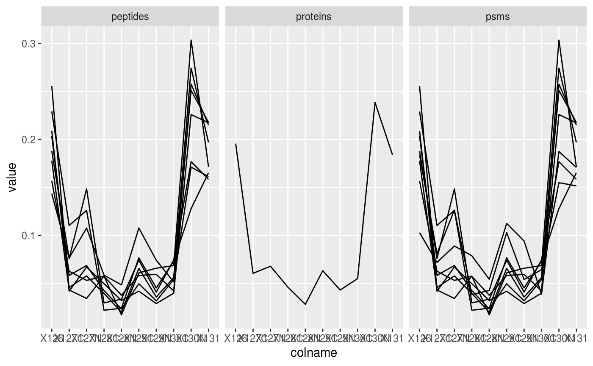
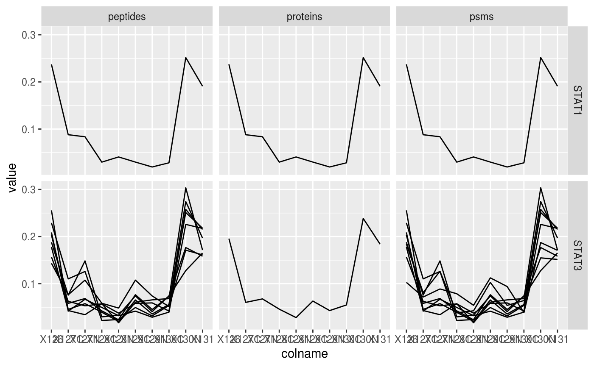

Features-class.RdConceptually, a Features object holds a set of assays, each
composed of a matrix (or array) containing quantitative data
and row annotations (meta-data). The number and the names of the
columns (samples) must always be the same across the assays, but
the number and the names of the rows (features) can vary. The
assays are typically defined as SummarizedExperiment objects. In
addition, a Features object also uses a single DataFrame to
annotate the samples (columns) represented in all the matrices.
The Features class extends the
MultiAssayExperiment::MatchedAssayExperiment and inherits all
the functionality of the
MultiAssayExperiment::MultiAssayExperiment class.
A typical use case for such Features object is to represent
quantitative proteomics (or metabolomics) data, where different
assays represent quantitation data at the PSM (the main assay),
peptide and protein level, and where peptide values are computed
from the PSM data, and the protein-level data is calculated based
on the peptide-level values. The largest assay (the one with the
highest number of features, PSMs in the example above) is
considered the main assay.
The recommended way to create Features objects is the use the
readFeatures() function, that creates an instance from tabular
data. The Features constructor can be used to create objects
from their bare parts. It is the user's responsability to make
sure that these match the class validity requirements.
Features(..., assayLinks = NULL)
| ... | See `MultiAssayExperiment` for details. |
|---|---|
| assayLinks | An optional [AssayLinks] object. |
Features(..., assayLinks) allows the manual construction of
objects. It is the user's responsability to make sure these
comply. The arguments in ... are those documented in
MultiAssayExperiment::MultiAssayExperiment(). For details
about assayLinks, see AssayLinks. An example is shown below.
The readFeatures() function constructs a Features object
from text-based spreadsheet or a data.frame used to generate
an assay. See the function manual page for details and an
example below.
The Features class extends the
MultiAssayExperiment::MultiAssayExperiment class and inherits
all its accessors and replacement methods.
The combineFeatures() function creates a new assay by
combining features of an existing assay.
addAssay(object, x, name, assayLinks): Adds a new assay (or
list of assays) x to the Features instance object. name
is a character(1) naming the single assay (default is
"newAssay"), and is ignored if xis a list of assays.assayLinks` is an optional AssayLinks.
The subsetByFeature() function can be used to subset a
Features object using one or multiple feature names that will
be matched across different assays, taking the aggregation
relation between assays.
The readFeatures() constructor and the combineFeatures() function.
## ------------------------ ## An empty Features object ## ------------------------ Features()#> A empty instance of class Features## ----------------------------------- ## Creating a Features object manually ## ----------------------------------- ## two assays (matrices) with matching column names m1 <- matrix(1:40, ncol = 4) m2 <- matrix(1:16, ncol = 4) sample_names <- paste0("S", 1:4) colnames(m1) <- colnames(m2) <- sample_names rownames(m1) <- letters[1:10] rownames(m2) <- letters[1:4] ## two corresponding feature metadata with appropriate row names df1 <- DataFrame(Fa = 1:10, Fb = letters[1:10], row.names = rownames(m1)) df2 <- DataFrame(row.names = rownames(m2)) (se1 <- SummarizedExperiment(m1, df1))#> class: SummarizedExperiment #> dim: 10 4 #> metadata(0): #> assays(1): '' #> rownames(10): a b ... i j #> rowData names(2): Fa Fb #> colnames(4): S1 S2 S3 S4 #> colData names(0):(se2 <- SummarizedExperiment(m2, df2))#> class: SummarizedExperiment #> dim: 4 4 #> metadata(0): #> assays(1): '' #> rownames(4): a b c d #> rowData names(0): #> colnames(4): S1 S2 S3 S4 #> colData names(0):## Sample annotation (colData) cd <- DataFrame(Var1 = rnorm(4), Var2 = LETTERS[1:4], row.names = sample_names) el <- list(assay1 = se1, assay2 = se2) fts1 <- Features(el, colData = cd) fts1#> A instance of class Features containing #> [1] assay1: SummarizedExperiment with 10 rows and 4 columns #> [2] assay2: SummarizedExperiment with 4 rows and 4 columns## Add an assay fts1 <- addAssay(fts1, se1[1:2, ], name = "se3") ## ------------------------------------------------- ## Creating a Features object from a data.frame (see ## ?readFeatures for details) ## ------------------------------------------------- data(hlpsms) fts2 <- readFeatures(hlpsms, ecol = 1:10, name = "psms") fts2#> A instance of class Features containing #> [1] psms: SummarizedExperiment with 32776 rows and 10 columnsfts2[[1]]#> class: SummarizedExperiment #> dim: 32776 10 #> metadata(0): #> assays(1): '' #> rownames(32776): 136 141 ... 115747 115775 #> rowData names(18): Sequence ProteinDescriptions ... RTmin markers #> colnames(10): X126 X127C ... X130N X131 #> colData names(0):fts2[["psms"]]#> class: SummarizedExperiment #> dim: 32776 10 #> metadata(0): #> assays(1): '' #> rownames(32776): 136 141 ... 115747 115775 #> rowData names(18): Sequence ProteinDescriptions ... RTmin markers #> colnames(10): X126 X127C ... X130N X131 #> colData names(0):## ---------------------------------------------------- ## Add new assays, computed from the existing ones (see ## ?combineFeatures for details) ## ---------------------------------------------------- fts2 <- combineFeatures(fts2, "psms", "Sequence", name = "peptides") fts2#> A instance of class Features containing #> [1] psms: SummarizedExperiment with 32776 rows and 10 columns #> [2] peptides: SummarizedExperiment with 26796 rows and 10 columns#> A instance of class Features containing #> [1] psms: SummarizedExperiment with 32776 rows and 10 columns #> [2] peptides: SummarizedExperiment with 26796 rows and 10 columns #> [3] proteins: SummarizedExperiment with 4276 rows and 10 columns## ---------------------------------------------------------------- ## Extract a subset of features that relate to Isoform Stat3B of ## Signal transducer and activator of transcription 3 (STAT3) with ## accession number P42227-2 ## ---------------------------------------------------------------- stat3 <- fts2["P42227-2", , ] ## we get one protein, 8 peptides and 9 PSMs stat3#> A instance of class Features containing #> [1] proteins: SummarizedExperiment with 1 rows and 10 columns #> [2] peptides: SummarizedExperiment with 8 rows and 10 columns #> [3] psms: SummarizedExperiment with 9 rows and 10 columns#> #> #> #> #>ggplot(data = stat3_df, aes(x = colname, y = value, group = rowname)) + geom_line() + facet_grid(~ assay)## -------------------------------------------------------------- ## Extract Signal transducer and activator of transcription 1 ## (STAT1) and 3 (STAT3) (accession numbers P42227-2 and P42225) ## -------------------------------------------------------------- stat <- fts2[c("P42227-2", "P42225"), , ] ## STAT1 has only one peptide/PSM stat#> A instance of class Features containing #> [1] proteins: SummarizedExperiment with 2 rows and 10 columns #> [2] peptides: SummarizedExperiment with 9 rows and 10 columns #> [3] psms: SummarizedExperiment with 10 rows and 10 columnsstat_df <- data.frame(longFormat(stat)) stat_df$stat3 <- ifelse(stat_df$rowname %in% stat3_df$rowname, "STAT3", "STAT1") ggplot(data = stat_df, aes(x = colname, y = value, group = rowname)) + geom_line() + facet_grid(stat3 ~ assay)